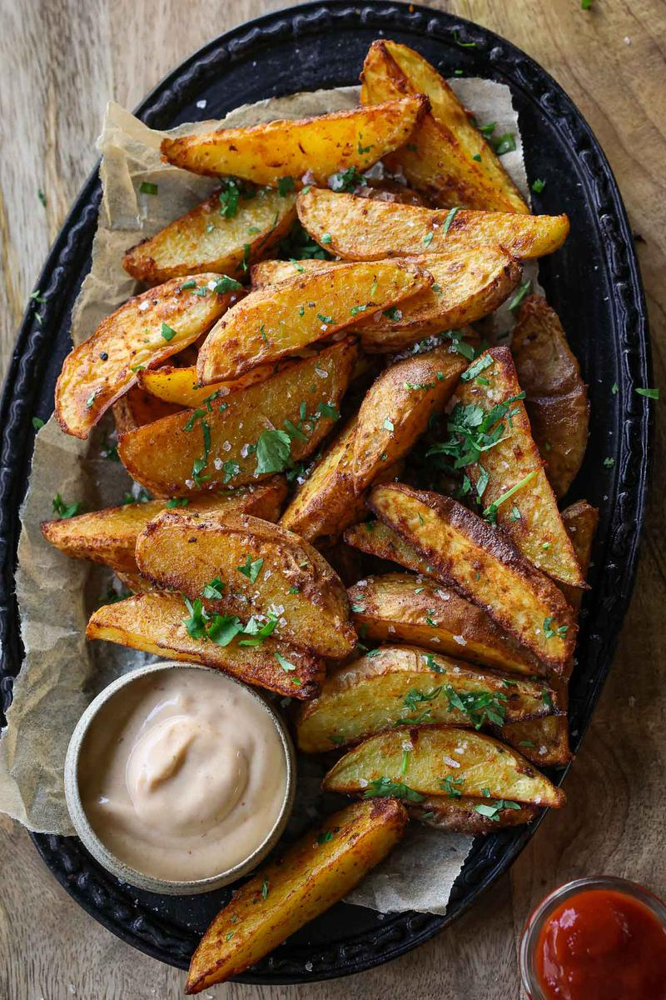
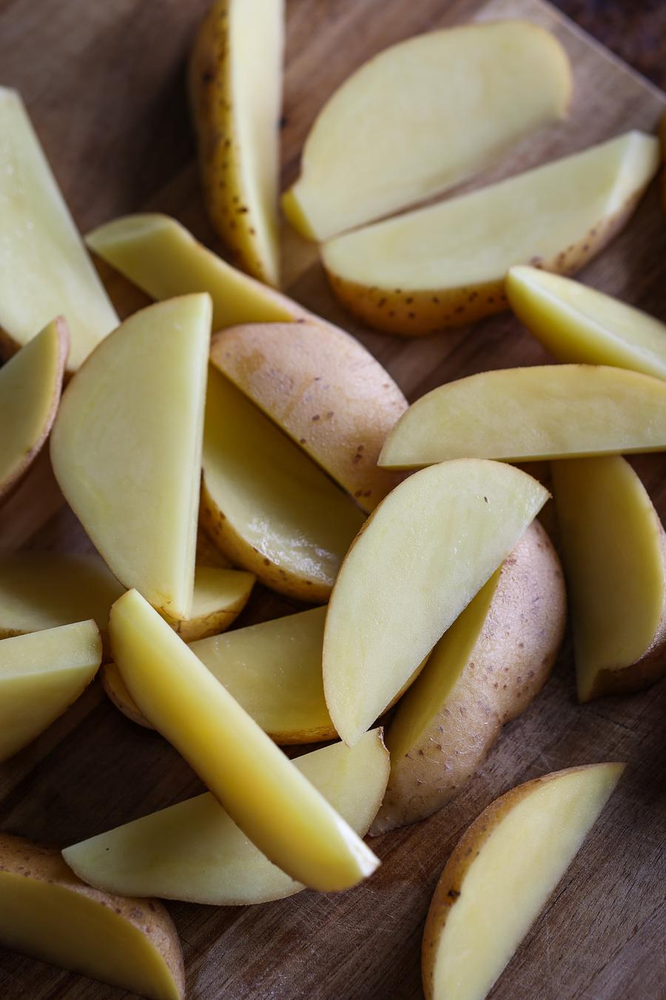
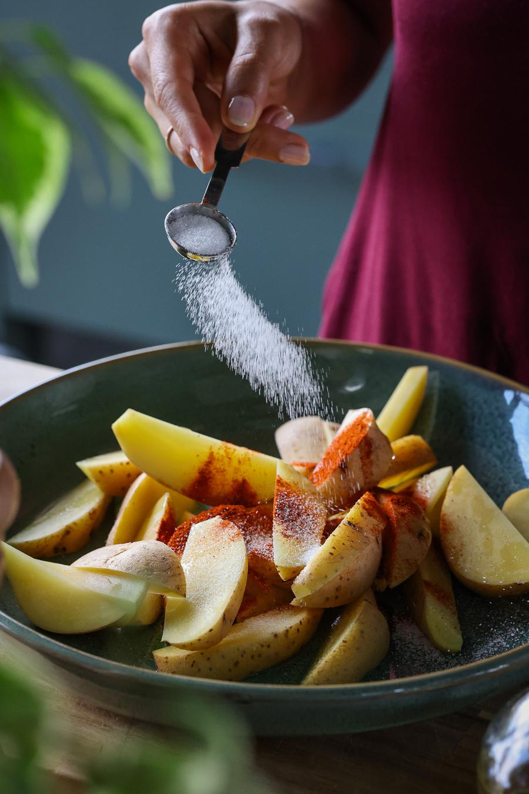
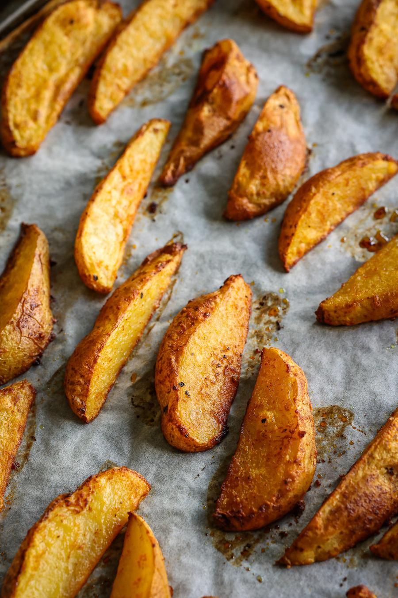
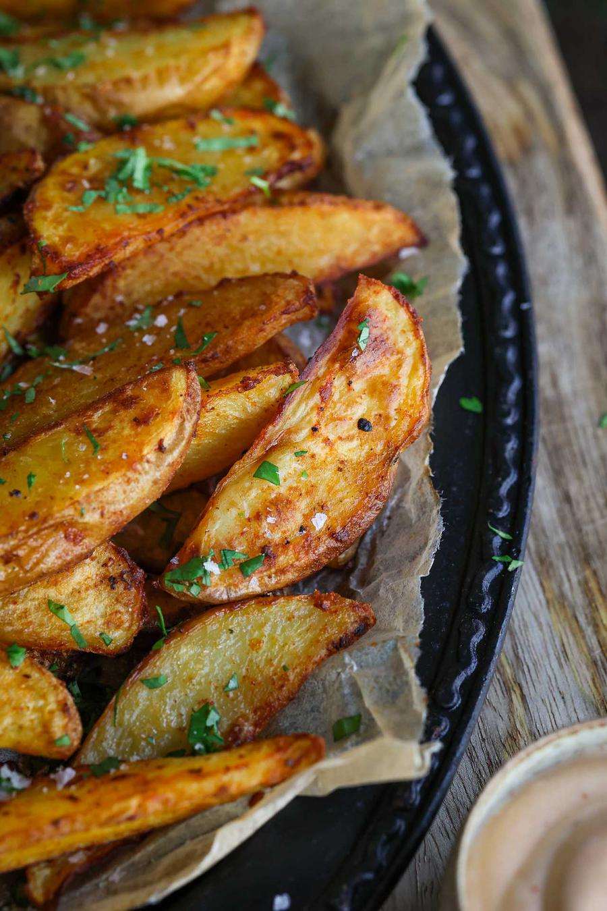

Roasted Potato Wedges

- 🍽️Servings: 4
- 🍝Total time: 43 min
- ⏱️Prep time: 8 min
- 🧑🏼🍳Cook time: 35 min
Ingredients
- 4 medium potatoes
- 1 Tbsp (15 mL) vegetable oil
- ¾ tsp paprika powder
- ½ tsp onion powder
- ½ tsp garlic powder (optional)
- ½ tsp salt
- 1 pinch ground black pepper
Serves well with
- ketchup
- sriracha mayo
- vegan ranch mayo dip
Directions
- Preheat the oven to 350°F (180°C). Cut the potatoes in half lengthwise, then cut into wedges about ½ inch (1 cm) thick.

- Transfer the potatoes to a large bowl. Drizzle with the oil, paprika, onion powder, garlic powder, salt, and pepper and mix to coat.

- Spread the potatoes out in a single layer, ideally over two lined baking trays. Try to not overcrowd the tray, as this won't allow the potatoes to crispen up sufficiently in the oven.

- Bake in the centre rack of the oven for 25 - 35 minutes, or until golden, stopping to give the potatoes a flip once halfway.

- Serve with your favourite dip(s). Enjoy!
Storage
- Store in an airtight container in the fridge for up to 3 days.